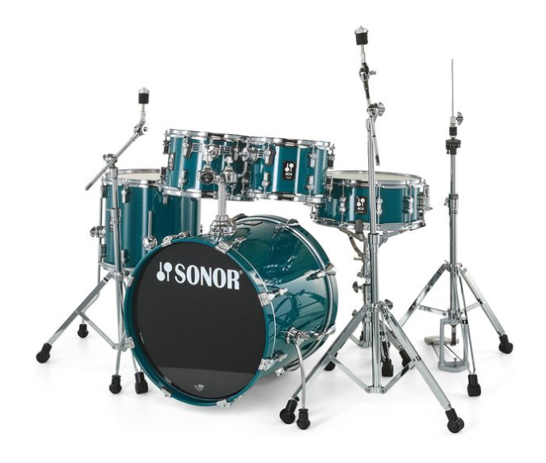

Sonor est une marque de batterie fondée en 1875 en Allemagne , c'est une
des plus vieilles entreprise de création d'instruments et est utilisée
par Motorhead, Iron maiden ou encore AC/DC

Sonor AQ1 Studio Set Caribbean Blue
1099.99€
Configuration :
Grosse Caisse : 20" x 16"
Tom 1 : 10" x 07"
Tom 2 : 12" x 08"
Stand tom : 14" x 13"
Caisse claire 14" x 06"
Autre :
Fûts 100% bouleau
Support double de toms incl.
Couleur: Caribbean Blue (CB)
Accastillage chromé